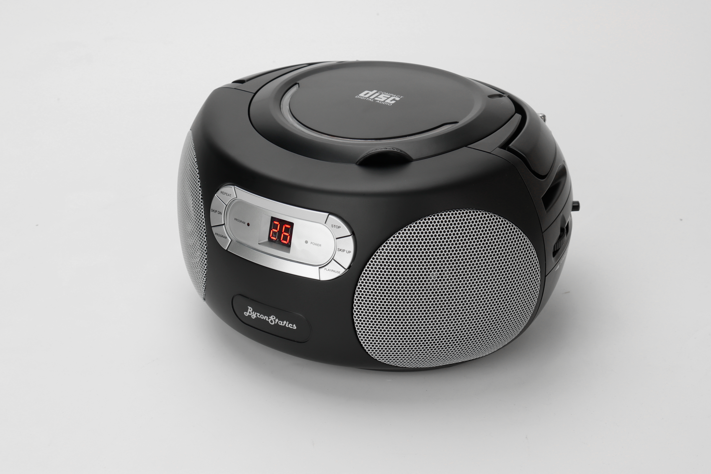
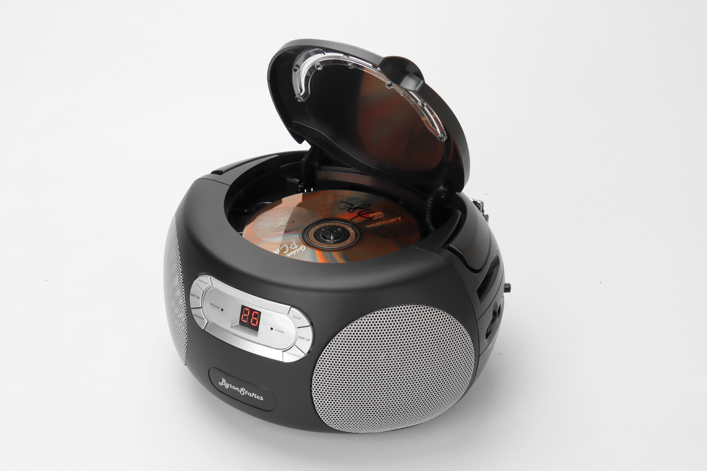
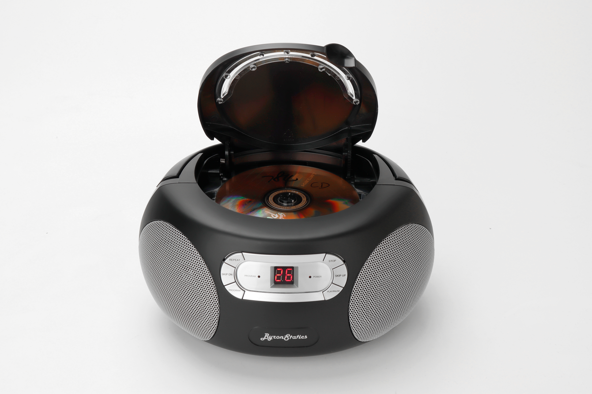
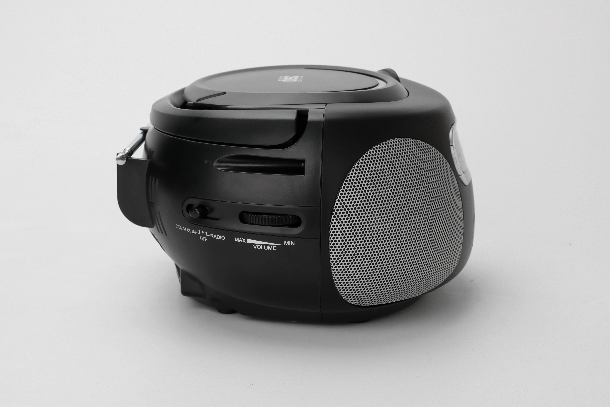
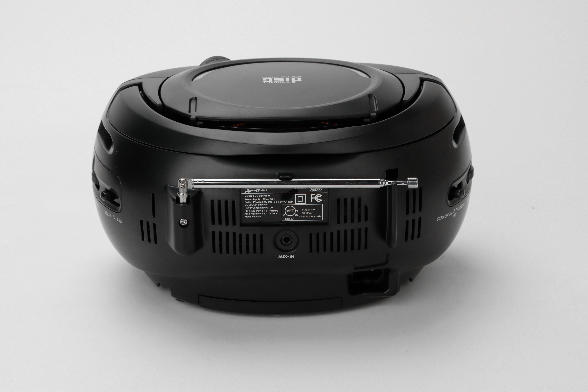
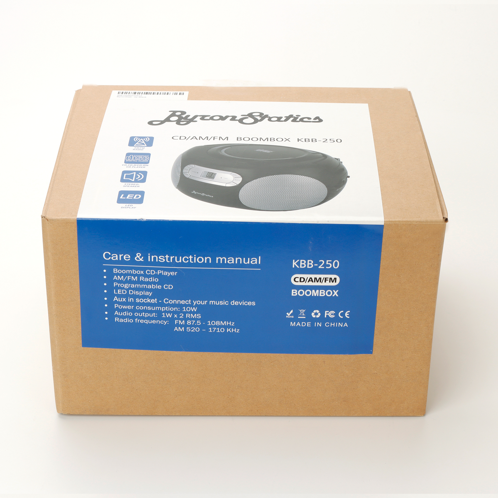

Image: KBB-250 Black, front view, powered on






Click any image to view full size
Boombox • Compact
KBB-250
★ 4.2 / 5 (325 reviews on Walmart)
Compact top-loading CD boombox in classic white finish. Built for portability with both AC and DC power options.
Specifications
- Type
- Top-loading CD boombox
- AM Range
- 520–1710 kHz
- FM Range
- 88–108 MHz
- Speakers
- Dual 1W RMS stereo
- Antenna
- Telescopic
- Power
- AC power cord OR 6× C batteries (not included)
- Display
- LED display
Available Color
Black